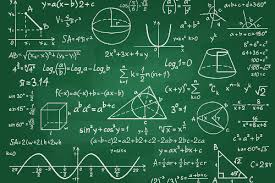

MATHEMATICS is, in its way, the poetry of logical ideas. If you stop at general math, then you will only make genenral money. Math tricks help you learn techniques on how to solve questions quickly and can help students develop greater confidence in math, improve math skill and understanding. MATHEMATICAL SPEEDING CORNER will teach you on how to solve problems that don't have an easy way of reaching the solutions. This will help grow patience.
